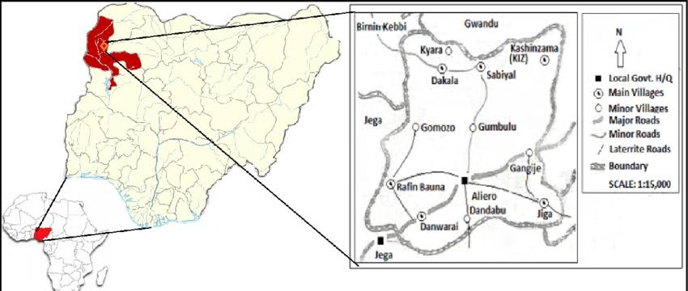

Introduction
Kebbi State was one of the 36 states of the federation created in 1991 by the Federal Government of Nigeria. Aliero Local Govenment Area is one of such Local Govermment Areas established in Kebbi State in 1996. In order to give the picture of Local Government Area, history and geography are important figure. History is meant to describe the past, present and future, while geography gives the picture where the Local Government is in the Nigerian map as well as the State. This article will take a look at the people of the Local Government and their social place, religious practice, culture and economic way of leaving.
Origin and Development of Aliero
The original founders of Aliero were Namasawa and Kabawa tribes in the late 16 century. In the 17h century people from different ethnic groups like Bare-bare from Barno, Marina from Nupeland, Zamfarawa from Zam fara and Wangarawa from Mali migrated and inhabited the area as a result of the fertile nature of the land. The place known as Aliero had got its name from a Fulani Herdsman ALI DAN YARO who had been coming to the area annually to graze his animals from nearby Zauro/Ambursa Area and settled in the area temporarily. The name Aliero came as a result of Dan Yaro's relatives who also come from Zauro/Ambursa Area who referred to intent of visiting Ali Dan Yaro as we are going to visit "Ali Dan Yaro" which later turned to Ali Yaro. It was during the colonial time that ALI YARO was metamorphosed to ALIERO by the British administrators. As the place gradually increase in population due to immigration, there was well known Muslim scholar named Almustapha Hamma who was a Wangara man that came from Mali to Maratta ( now Niger Republic ) and stayed there for many years before moving to Gobir , Karangiya and Jakurutu in Argungu and later he finally came back and settle in Aliero . He was warmly welcomed and was received by the people in the area . He wrote and informed Malam Abdullahi bn Fodio of his coming to the Area. As a learned scholar , it was through his preaching and practice that he converted many people to Islam. As a result of this , the people of the area thought of compensating him with the leadership of Aliero town. Many group of people are found in the area today . The first group are Kabawa who arrived to the area at the end of 17th century . They were from the former Kabi Kingdom under the leadership of Lumu . They settled in the area for the purpose of farming . They are found in north - west of the area where they formed a clan. The second group settled in the area are Dakkarawa tribes . They arrived to the area in the early 18th century under the leadership of Kamso. They later left the town and settled in a village called Kali, 2km away from the western part of Aliero town. Zamfarawa is another group of people who settled in the area and formed their clan. A group of Wangarawa later Namasawa who visited Hausaland from Mali for the spread of Islam moved to the area. This formed the historical evolution of the area. On the above account, we could understand that, the area witnessed a rapid development since precolonial era.
Geographical Location of Aliero Town
Aliero Local Government Area was created in November 1996. It is located at 42 kilometers South - East of Birnin - Kebbi and it covers a total of 167 square kilometers with total number of population over 65,973 according to the estimated figure of 2006 census exercise . The federal roads that link Sokoto to Kebbi passes through the area to Jega up to Niger State . This road divided the town into South and North. Aliero shares common boundaries with Sabiyal district in the North, Jega in the west, Tambuwal in the east and it boarded with Gehuru District in the south. The climate condition has always been on the average temperature of 40°C while the annual average rains rate is 25 inches which normally starts at the middle of the year i.e in the month of May and end mid of September or October the same year. The area is Savannah vegetation, it witness two major seasons dry and rainy season. The rainy season start from May to October and the dry season start from November to January which is characterized by heavy fog and dust as well as extreme cold. The topography of Aliero is flat and slightly with compact stony brown soil.
The People of Aliero Town
People of Aliero town are well known for their skills in onion farming and traditional correction of fracture across west and central Africa . This is the compliment of single family descendant of Abubakar na - gomozo who was very gifted and performed many surprised things during his life time. His Son Alhaji Lawal popularly known as Nomau Mai Dori meaning, Nomau the "bone setter" was the first Sarkin Dauri of Aliero. Sarkin Dauri is a title giving to the head of traditional bone setters, the title is one of the recognized title in the council of Aliero. The people of the area eat food such as "tuwon masara", "tuwon dawa" and "tuwon shinkafa. They prepare different kinds of soups generally called "miya" They also prepare locally made beverages like Kunu and processed millet and cow milk called Fura da nono" The festivities amongst the people are mostly religious ones like 'Id-el-fitr which is celebrated after the completion of fasting of the month of Ramadan and ld-el-adha (the Id of sacrifices) which is celebrated on the 10 days of Dhal-Haji month of Islamic calendar. Another festival is Maulud day (the birth of Prophet Muhammad (peace and blessing of Allah be upon him).
.jpeg)
Social and Occupational Life of the People of Aliero Town Aliero Local Government Area is an agricultural rich area and most of the people are farmers. Before the 1804 Jihad that brought rapid increase of population in the area, most of the people are Hausas, Kabawa, Arawa, Dakkarawa and Fulani. The Jihad of 1804 imparted positive transformation in the socio-economic life of the people in the area. Many people have migrated to the town for some reasons. Islamic culture and CIvilization gradually replaced the pre-existing culture which was based on the traditional practice. Now in the area, the socio-economic way of life is dominated by the changes brought by the Sokoto Jihadists. People of the area are Muslim and farmers, very hospitable, loyal to the institutional authority and peace loving people. People from different parts of the country could be found in the area . Due to the creation of more business and academic institutions coupled with high production of onion and the establishment of Kebbi State University of Science and Technology. The type of people in both social and economic aspects is positively changing gradually Socially the people of the area are very concerned about their culture. In their ways of dressing women wear wrapper ( Zani ) reaching the lowest level of their ankles , with shirt ( Riga ) head tie ( Dakwali ) and veil ( Mayafi or Hijab ). They also wear bangles , necklaces , and ornament, use of rings are also regarded as fashion to both men and women. Men usually wear long gown , trousers with cap made by hand with thread and needle Another type of business taking place in the area is rearing of livestock, such as goat, cattle, sheep, donkey, camel, guinea fowl and chicken . These animal provide cash and meat for the people, other occupational activities in the area are weaving, carving, sewing, blacksmiths, leather work tanning and dyeing.
.jpeg)
Political Life of the People of Aliero
In every society , leadership is the most influential factor that brings stability and security to the citizens and their properties . As in most of the Hausaland, they have a strong traditional hereditary / system of administration. The first settlement of the leadership system of the area started since the time people started gathering in the area up to the present time, but system and pattern defers from time to time. The descendants of Almustapha Hamma ( who was mentioned earlier as the first nominated leader due to his Islamic knowledge), have monopolized the administration system of the area and it is headed by the king who is assisted by a number of officials as his council. For example, Waziri, Dangalidima, Sarkin Yaki , Magajin Gari , Ubandoma, Bunu, Zarummai and Sarkin Baki . Each of these council members are assigned with a duty . As the town developed , new titles were created to assist the king in running his administration within and outside the town. All the village heads are answerable to the king, presently , the chairman is overseeing the administrative system of the Local Government Area leaving the king with the settlement of disputes between people and other duties that the chairman could not perform. The position of the chairmanship is by elective, chairman is democratically elected leader who rule according to the practice of democracy in the country while king of Aliero is always nominated among the descendents of Almustapha Hamma. The kingdom of Aliero was ruled by the following kings, in order of their administration from the first to the current as of the time of writing this article.
- Almustapha Hamma
- Muhammadu Sanusi
- Muhammadu Nasalmata
- Salihu Almustapha
- Ali Almustapha
- Attahiru Ali
- Haliru Son Allah
- Muhammadu Attahiru
- Usman Attahiru
- Almustapha Attahiru
- Umaru Usman
- Salihu Muhammadu
- Buhari Muhammadu (Current king at the time of writing this article)